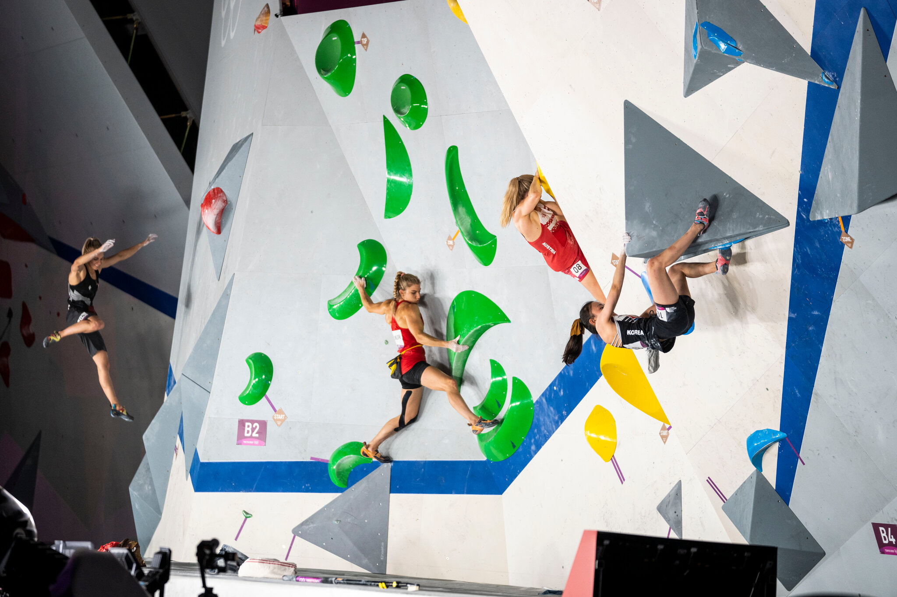
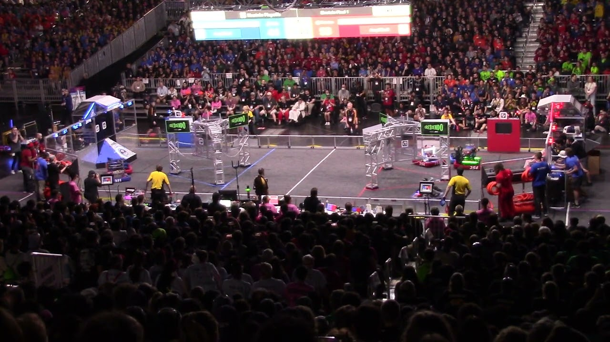
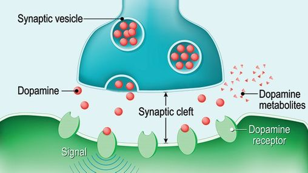

My parents tell me many stories of when I was young, but one really stuck out to me. Apparently I had been a slow learner to walk, being slightly behind other kids my age when one day I stood up and instead of learning to slowly walk, I had advanced to a sprint and would run around anywhere while other kids were stuck walking. Ever since then I would constantly run around, tiring out my parents. I believe this is when I started my love for exercise where I could not stop moving around. I tried out many different sports ranging from ball sports, racket sports, to running, but nothing could fit the thrill that I had yearned for. Then I found climbing. The first time I tried climbing, it was not what I expected. A hard workout on the body that felt more like a fun pastime like a trampoline park than a sport. But after moving to San Diego, I found that climbing could be the sport that I was searching for.
Ever since I was able to get into the robotics team on the team, I had a very fun time spending time with new people. We built a whole robot from scratch based on the new game and from there, spent the season refining and visiting different competitions with hopes to get to worlds in Texas. Thankfully we were able to get to worlds and from there I had the greatest experience I have ever had with games in hotels, pool hangouts, and watching the competition between teams all around the world. I daydream back to these days whenever I'm bored and they instantly bring me back to the fun I had.
As I look back I realized I have been spoiled as a child, leading me to being addicted to dopamine since a child even before tiktok and instagram were a thing in my life. This had led to some unhealthy addictions but thankfully I was able to fix these addictions by finding friends that I could hang out with without having to be online to have fun. Hanging out with my friends during weekends and breaks were always fun, talking and playing with each other. I also found ways to exhaust my body in order to occupy my time such as exercising or reading. By finding these activities to replace my dopamine addiction, I was able to enjoy living in the moment rather than having to depend on technology to rule my life.